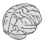
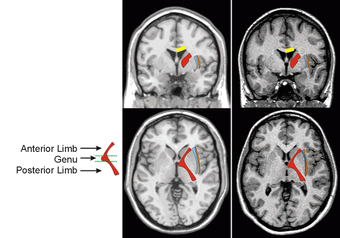

|  | Subcortical white matter landmarks | Introduction Atlas Links |
Overview
This page highlights a few salient subcortical white matter tracts. The claustrum separates the external and extreme capsules (to see the claustrum, examine the axial slices page). The University of Michigan Medical School has an excellent page describing the anatomy and connections of the internal capsule (interactive features require a browser with Javascript).

Chris Rorden, 13 October 2002